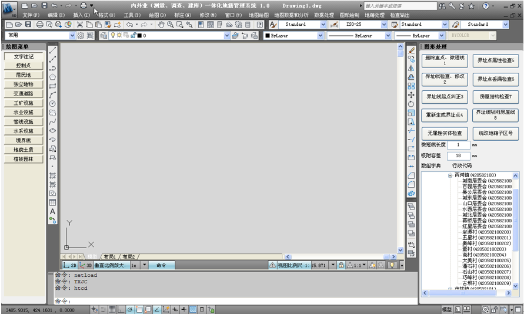
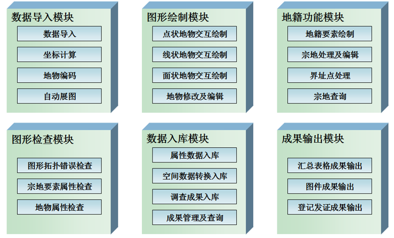

系统介绍
- 内外业（测量、调查、建库）一体化地籍信息系统基于AutoCAD Map 3D 2012 平台、MS SQL Server 2008关系数据库、Flexcell Technology For .NET 4.0表格控件搭建，集成开发环境选用MS Visual Studio 2010，该平台具有和AutoCAD软件完全一致的操作环境和数据处理方式，并且支持对空间数据的访问、处理和管理。利用平台自带的FDO技术及SDE技术，结合SQL Server关系型数据库，实现空间数据的入库及管理，并能够与ESRI ArcGIS平台共用同一数据库，实现数据在不同GIS平台间的分布式控制与管理。系统可以实现从全站仪、 GPS RTK野外数字测图数据导入和权属调查信息录入、图形绘制、数据检查、空间数据转换、土地数据库建库到调查登记成果输出一体化的工作流程，主界面如下图所示：

系统模块
- 内外业（测量、调查、建库）一体化地籍信息系统设计为数据导入、图形绘制、地籍功能、图形检查、数据入库和成果输出六个功能模块，系统个部分模块对应主要功能如下图所示：

部署和安装
系统运行环境:Windows XP及以上操作系统
硬件要求：2G以上内存，CPU主频2.0GHz以上
安装该系统前请确保计算机上已经安装了：
- AutoCAD Map 3D 2012或以上版本（推荐安装AutoCAD Map 3D 2012）
- Microsoft SQL Server 2008或以上版本（推荐安装Microsoft SQL Server 2008）
- Microsoft Office 2003或以上版本
- Adobe Reader或其他PDF阅读器